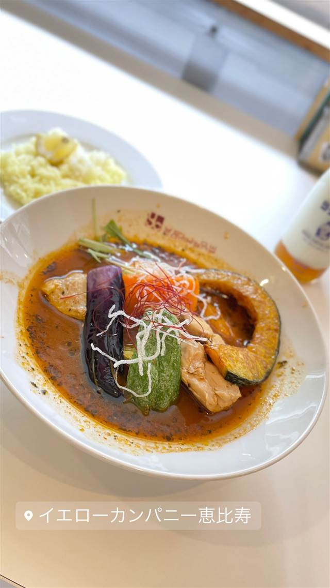

イエローカンパニー 恵比寿本店（YELLOW COMPANY）
北海道産食材と30種以上のスパイスで仕込むスープカレー
イエローカンパニー恵比寿
イエローカンパニーは2004年、札幌スープカレーの本場仕込みの味を掲げて恵比寿にオープンした店。オーナーシェフの大竹雅人氏が30種類以上のスパイスを使い、北海道産食材にこだわったスープカレーで東京の第一次ブームを牽引した。
TRIVIA
豆知識
- 使用するスパイスは30種類以上
- できる限り北海道産の食材にこだわっている
- 東京の「第一次スープカレーブーム」を牽引した店のひとつとされる
REVIEWS
世間の評判
3.72食べログ
鶏の旨味効いたスープの後引く美味しさ
- 鶏の旨味と野菜の甘みが溶け込んだスープの美味しさを評価する声が多い
- 角煮が大きく野菜もごろごろ入ったボリュームを評価する声がある
- カフェのようなおしゃれで優雅な雰囲気で居心地が良いという声が複数ある
食べログ 口コミ1547件
| 創業 | 2004年、恵比寿にオープン（札幌スープカレーの第一次ブームを牽引した店の一つ） |
|---|---|
| 系譜 | 本場・札幌でスープカレーを学んだ店主が東京・恵比寿へ進出 |
| 看板 | スープカレー |
| こだわり | 30種類以上のスパイスを使用し、無添加でパンチのあるスープを毎日仕込む。できる限り北海道産の食材にこだわる |
| 掲載・評価 | 食べログ百名店（スープカレー）に複数年選出 |
| どこから | 都心 |
| 営業時間 | 月 11:30-16:00 火 休み 水〜日 11:30-16:00、17:00-21:00 |
| 予算 | 昼 ¥1,000～¥1,999 夜 ¥2,000～¥2,999 |
| 定休日 | 火曜 |
| 予約 | 予約可 |
| 場所 | 恵比寿 東京都渋谷区恵比寿 |
| メモ | 恵比寿本店のほか麻布台ヒルズにも店舗展開 |
食べたもの：スープカレー
OFFICIAL
店からの知らせ
その日の限定や臨時の休みは、店のXに出ます。
NEARBY
近い店・同じ系統の店
-
 ★
醤油・中華そば 恵比寿
手打 親鶏中華そば 綾川
青竹手打ちの麺と親鶏スープを合わせた親鶏中華そば
昼 ～¥999 夜 ～¥999
★
醤油・中華そば 恵比寿
手打 親鶏中華そば 綾川
青竹手打ちの麺と親鶏スープを合わせた親鶏中華そば
昼 ～¥999 夜 ～¥999
-
 アメリカンダイニング 恵比寿駅
MADISON NEW YORK KITCHEN（マディソン ニューヨーク キッチン）
2014年開業、赤とゴールドの内装で味わう熟成肉のステーキ
夜 ¥5,000～¥5,999
アメリカンダイニング 恵比寿駅
MADISON NEW YORK KITCHEN（マディソン ニューヨーク キッチン）
2014年開業、赤とゴールドの内装で味わう熟成肉のステーキ
夜 ¥5,000～¥5,999
-
 ピザ 恵比寿駅
L'Antica Pizzeria da Michele 恵比寿店
1870年創業のナポリ本店直伝、空輸チーズのマルゲリータ
昼 ¥2,000～¥2,999 夜 ¥4,000～¥4,999
ピザ 恵比寿駅
L'Antica Pizzeria da Michele 恵比寿店
1870年創業のナポリ本店直伝、空輸チーズのマルゲリータ
昼 ¥2,000～¥2,999 夜 ¥4,000～¥4,999
-
 ピザ 恵比寿駅(西口)
pizza marumo（ピッツァ マルモ）
和食出身の店主が薪窯で焼く、24時間発酵の低温生地ピザ
夜 ¥5,000～¥5,999
ピザ 恵比寿駅(西口)
pizza marumo（ピッツァ マルモ）
和食出身の店主が薪窯で焼く、24時間発酵の低温生地ピザ
夜 ¥5,000～¥5,999
-
 パスタ 恵比寿
BANDERUOLA-Cuscusseria-バンデルオーラ
シチリア・トラーパニ郷土料理クスクスを専用の器で蒸す製法を再現する専門店
昼 ¥1,000～¥1,999 夜 ¥6,000～¥7,999
パスタ 恵比寿
BANDERUOLA-Cuscusseria-バンデルオーラ
シチリア・トラーパニ郷土料理クスクスを専用の器で蒸す製法を再現する専門店
昼 ¥1,000～¥1,999 夜 ¥6,000～¥7,999
-
 イタリアン 恵比寿駅
ブラチェリア デリツィオーゾ イタリア（旧店名：デリツィオーゾ イタリア）
炭火焼き「熾火」にこだわる、恵比寿2000年創業のイタリアン
夜 ¥6,000～¥7,999
イタリアン 恵比寿駅
ブラチェリア デリツィオーゾ イタリア（旧店名：デリツィオーゾ イタリア）
炭火焼き「熾火」にこだわる、恵比寿2000年創業のイタリアン
夜 ¥6,000～¥7,999
ONSEN & SAUNA